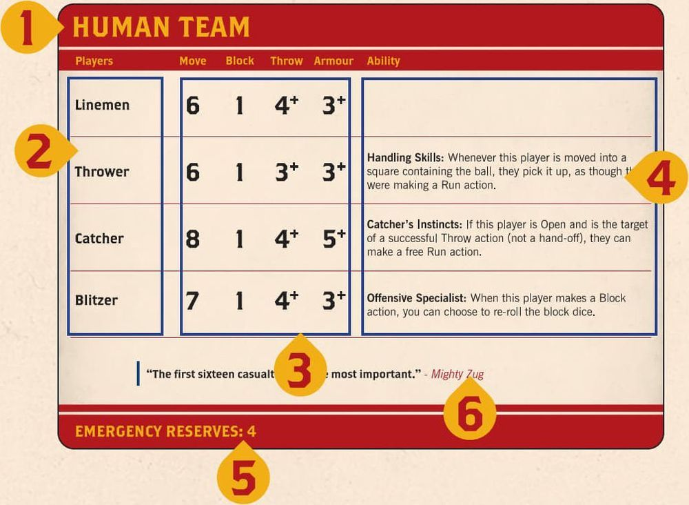
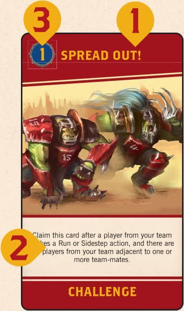
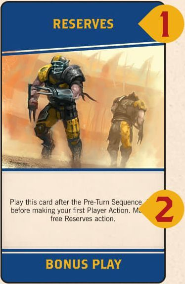
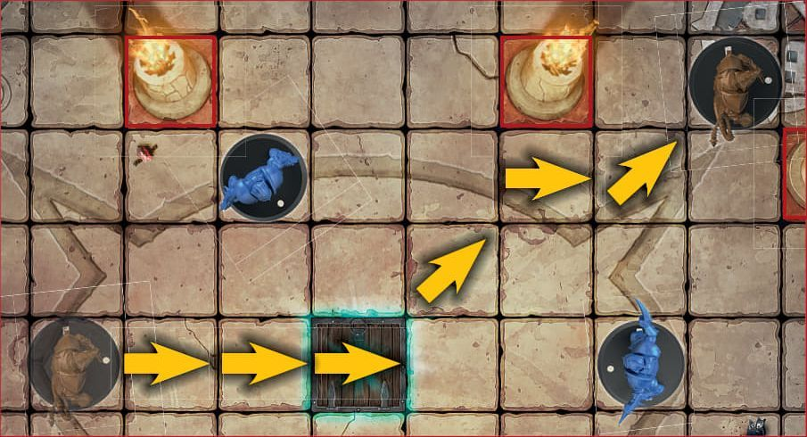
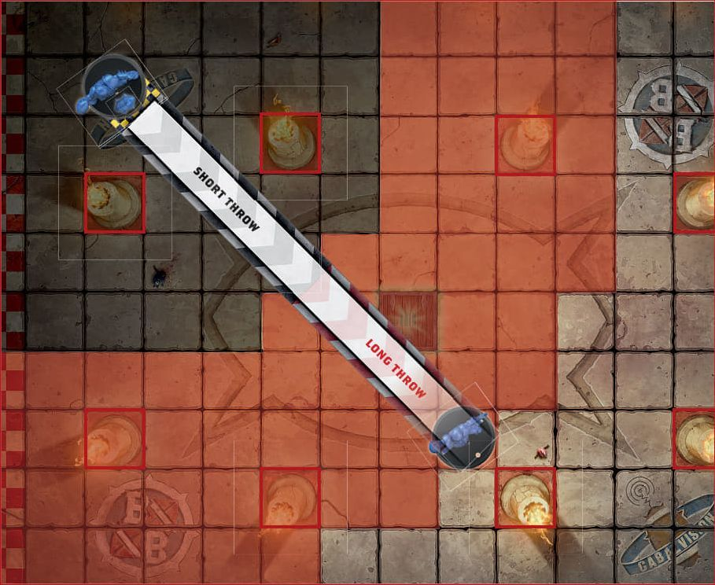
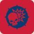
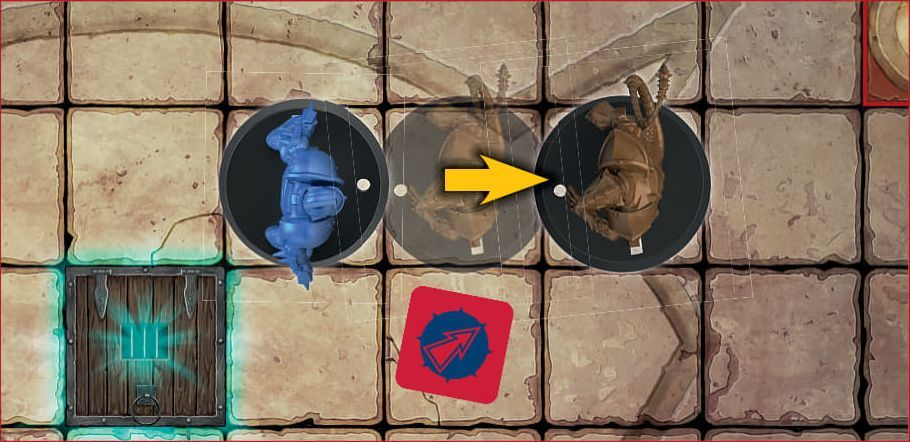
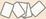

The Rules of Blitz Bowl
GAME OVERVIEW
Blitz Bowl is a fast-paced sports game for two players. In this game, each player is a coach in charge of a team of players competing against each other to score the most points by scoring touchdowns and completing challenges. If, at the end of a coach's turn, their team's score is 10 or more points behind the opposing team's score, the game immediately ends and the opposing coach wins the game. Otherwise, the game ends when no more challenges can be claimed, and if this happens, the team with the highest score wins.
BEFORE YOU PLAY
Before you can play your first game, you'll need to put all of the miniatures together. There is a construction guide that shows you how to do this.
One coach uses the Human team, called The Reavers, and the other coach uses the Skaven team, called The Scramblers.
You will also need to remove the dugout boards and throw ruler from their cardboard sheet.
TEAM CARDS
Each team in Blitz Bowl has a unique, double-sided Team card that shows the information you will need to play with that team.

- Team name
- Players on the team
- Each player's Move, Block, Throw and Armour values
- A player's ability (if they have one)
- The team's Emergency Reserves value
- Descriptive text (this has no impact on the game)
The reverse of each Team card shows the miniatures for that team, allowing you to easily identify the players you will need. Where there are multiple players who hold the same position on a team (e.g. Linemen) they are shown here too.
LEARNING THE BASICS
Once you've put the two teams of miniatures together, it's recommended that you play through, in order, each of the 7 Drill cards so you have an understanding of the core principles of the game. Once you've mastered those, the rest of the rules will make a lot more sense! It's also a good idea to read through this rulebook fully at least once before playing your first full game.
COMMENTARY WITH JIM JOHNSON:
UNDERSTANDING YOUR TEAM
Each team consists of six players - three Linemen, who are decent all-round players but do not have any abilities, and three unique players. Both teams have a Blitzer, who is good at blocking opposing players, and a Thrower who is good at picking up and throwing the ball. In addition, the Human team has a Catcher, who is more fragile but gets a free move if they catch a thrown ball. The Skaven team on the other hand has a Gutter Runner who ensures that the ball stays with your team even if they are knocked down. Understanding how best to use your players' abilities is key to victory.
IMPORTANT CONCEPTS
Before we dive into how to play the game, here are a few important concepts you need to know:
Coach: The real-life people who are playing this game
Players: The plastic player models that makes up a coach's team
Team-mate: A player from the same team
Opponent: A player from the opposing coach's team
Throw Checks and Armour Checks
If a coach is called upon to make an Armour or Throw check for a player, roll a D6 and compare the result to the Throw or Armour value for that player. If the result is lower than the given value, the check fails; otherwise, the check succeeds.
Some rules will modify the result of a check - this is done before comparing the dice result to the Throw or Armour value. However, in all cases, a check can never be modified by more than -1/+1, even when more than one modifier would apply. In addition, an unmodified roll of 1 on the dice always fails and an unmodified roll of 6 on the dice always succeeds.
A player with a '-' for their Armour value automatically fails all Armour checks. A player with a '-' for their Throw value cannot take possession of the ball - if they move into a square containing the ball or a ball moves onto them it automatically bounces (see Bouncing Ball, page 12).
Re-rolling Dice: Some rules allow a coach to 're-roll'. This lets the coach pick up the dice they just rolled and roll it again. If they rolled multiple dice, they must re-roll all of them. A re-roll cannot be used on the same dice roll more than once - you can't re-roll a re-roll! You also cannot use a re-roll on another coach's dice. If a coach re-rolls the dice, they must use the result of the re-roll, even if it is worse.
Taking Possession of the Ball: A player will take possession of a ball when any of the following occur:
- They are the target of a successful Throw action or a hand-off
- They move into the same square as a ball whilst making a Run action
- A ball bounces into the square they occupy and they are Open
- Through a unique player ability or Bonus Play card ability
The rules for these are covered later, but regardless of how a player takes possession of the ball, when they do, place the ball on the base for the model of that player. Many bases have holes in them for this purpose. Once this is done, that player is said to have possession of the ball.
CHALLENGE CARDS: The front of each Challenge card shows the following information:

- The name of the Challenge
- The conditions that must be met for a coach to claim the Challenge card
- The points scored for claiming the card
The back of each Challenge card is a Bonus Play and shows the following information:

- The name of the Bonus Play
- How the card can be played
Card vs Rulebook: Some cards break the rules in this rulebook, for example by modifying a Throw check by more than -1 or +1. Whenever a card contradicts the rules in this book, the card takes precedence.
Cannot: If two or more rules come into conflict, and one of them says 'cannot', that rule takes precedence. For example, if a player has a rule that says their Block actions cannot be assisted, a Bonus Play card that means your players' Block actions are assisted would have no effect on that player.
A COACH'S HAND: When Challenge cards are claimed these cards are put to one side, or held by a coach. These cards are referred to in these rules as a coach's 'hand'. The Bonus Play side of the cards in a coach's hand should be kept secret from their opponent.
IMMEDIATELY: When an ability or effect is described as happening immediately, it means before doing anything else, such as claiming a Challenge card, making another Action, or finishing the current turn.
PLAYER STATUS: During a game of Blitz Bowl, players can either be Open, Marked, Prone or in the dugout. Each of these is explained below:
Open Players - A player who is standing and who is not adjacent to any opponent is Open. Each of the eight squares around a given square are said to be adjacent to it.
Marked Players - A player who is standing adjacent to an opponent who is not Prone, is Marked. A player can Mark, and be Marked by, multiple opponents at once. Marking has a number of effects in the game, which are explained later in the rules.
Prone Players - A player who is laying on the ground is Prone. A Prone player cannot Mark another player and is for all intents and purposes not considered to be an active participant in the game. For example, they cannot be used to claim Challenge cards and do not affect the placement of players returning to the pitch (see Reserves, page 13). If a player has possession of the ball when they become Prone, the ball bounces from that player's square (see Bouncing Ball, page 12).
Reserves Players - A player will sometimes be placed in their team's dugout - this represents the player waiting to return to the pitch.
SCORING POINTS: Teams are awarded points during their turn by scoring touchdowns and claiming Challenge cards. Each team's score is recorded by the position of their score marker on the score track. Once a team's score reaches 10 points, their team coin is placed on the +10 space and their score marker is returned to 0. The same happens when their score reaches 20 or 30. So, for example, a team with a score of 17 would have their score marker on the 7 space and their coin on the + 10 space.
GAME OVERVIEW
To setup a game of Blitz Bowl, follow the steps outlined below:
- First, flip one of the team coins to determine which coach wins the toss. The winning coach chooses the pitch they want to use and places the game board in the centre of the table with that side face up. If this is your first game, we recommend using the pitch with a single trapdoor.
- A dugout is placed at each end of the board, as shown in the diagram.
- Next, the coaches decide who will control each team. Each coach takes their six players, then places their Team card face up in front of them where it can easily be seen and referenced.
- Now shuffle the deck of 24 standard Challenge cards with the Bonus Play side face down and place it challenge-side up in the space next to the board that is marked with the ED icon. Then deal out the top three cards, challenge-side up, into the Active Challenge Card spaces - the top card of the deck is dealt into the '1' space, the next into the '2' space and the next into the '3' space.
- Next, the coach that lost the coin toss sets up their team in their End Zone, then the other coach does the same. When setting up their team, the coach can choose which square each of their players is placed in. Each square can only have one player in it.
- Each coach puts their score marker on the 0 space of the score track and puts their team coin near the board.
- Finally, place a ball on the trapdoor. If the coaches are using the side of the board that has two trapdoors, the coach who won the toss rolls a D6. On a result of 1, 2 or 3 the ball is placed on the trapdoor closest to their End Zone; on a 4, 5 or 6 it is placed on the trapdoor closest to their opponent's End Zone.
Important: When placing the ball during setup you do not roll to see if the ball bounces (pg 12). In addition, the colour and shape of the ball that is placed does not matter at this point, the ball does not belong to either team and all balls follow the same rules.
PLAYING THE GAME
A game of Blitz Bowl is played across a variable number of turns. The coach who set up their team first (coach A) takes the first turn, followed by the other coach (coach B). Players continue alternating taking turns, one after the other, until the game ends (see Winning the Game, page 15). On their turn each coach works through the game sequence shown below:
GAME SEQUENCE
| Coach A's turn | Coach B's turn |
|---|---|
| 1) Pre-Turn Sequence* a. Refresh Challenge Cards step b. No Ball in Play step c. Emergency Reserves step |
1) Pre-Turn Sequence* a. Refresh Challenge Cards step b. No Ball in Play step c. Emergency Reserves step |
| 2) Player Action 1 - Claim Challenge Card step** |
2) Player Action 1 - Claim Challenge Card step** |
| 3) Player Action 2 - Claim Challenge Card step** |
3) Player Action 2 - Claim Challenge Card step** |
| 4) Player Action 3 - Claim Challenge Card step** |
4) Player Action 3 - Claim Challenge Card step** |
Important
* In each coach's first turn, do not complete the Pre-Turn Sequence - it is skipped.
** In addition, Challenge cards cannot be claimed by either coach during their first turn.
A coach first completes the Pre-Turn Sequence - refreshing the Challenge card row (see Challenge Cards, page 14), checking to see if a new ball enters play (see No Ball in Play, page 14), and finally checking for emergency reserves (see Emergency Reserves, page 13). Then they will make three Player Actions, one after the other (see Actions, opposite).
Play then passes to the other coach to take their turn, and play alternates in this way, one coach taking a turn followed by the other, until the game is over.
ACTIONS
On their turn a coach makes a total of three actions, one in each Player Action of their turn, dividing those actions between the players on their team however they wish. A player can make more than one action in a coach's turn, but cannot make the same action more than once. For example, if the Human coach made a Run action with their Blitzer, they could not make another Run action with their Blitzer during the turn, but the Blitzer could make another action - for example, they could Mark an opponent. Note that the Human coach could still make Run actions with other players on their team, as long as no player makes the same action more than once.
The actions a player can make are dependent on their current status, as shown below:
| OPEN PLAYERS | MARKED PLAYERS | PRONE PLAYERS | RESERVES PLAYERS |
|---|---|---|---|
| Run | Block | Stand Up | Reserves |
| Mark | Sidestep | ||
| Throw |
FREE ACTIONS
Some player abilities and Bonus Play cards allow a player to make a free action. This is done in the same way as a regular action, following all of the rules outlined above (e.g. the same player cannot make the same action more than once in a turn), but does not count towards the regular three Player Actions a coach can make during their turn. In addition, free actions are also accompanied by a Claim Challenge Card step, granting coaches the chance to claim a Challenge card in the same way they would for a Player Action.
RUN ACTION
When a player makes a Run action, their coach chooses an Open player and moves them a number of squares up to their Move value. A move can be made into any adjacent square that is not occupied by another player (either standing or prone) or blocked (pg 3), and players cannot move off the pitch. In addition, when a player makes a Run action, their move cannot take them adjacent to an Open or Marked opponent, but they can move adjacent to Prone players. Trapdoors do not block movement; players can move onto them freely, but they can be quite hazardous as they fly open whenever a new ball enters play, and many a player has disappeared down them never to be seen again - you have been warned!

In this diagram, the Skaven Lineman is making a dash across the pitch, running a total of 7 squares while not moving adjacent to any of the Human Linemen.
Move Value: If a player's Move value is shown on their Team card as D6, roll a D6 each time that player makes a Run action. The result on the D6 is how far that player can move for that Run action.
Picking up the Ball: A player that makes a Run action and moves into a square that contains a ball takes possession of that ball. If a player moves onto the ball in any other way - for example, when making a Mark or Sidestep action, or when pushed by an opponent - the ball bounces (pg 12). In addition, a player that already has possession of a ball cannot take possession of another ball (pg 6). When a player takes possession of a ball, that ball is moved onto that player's base to show that they have it (some of the balls have a small peg that fits into the hole on the player's base for just this purpose). When a player that has possession of a ball moves, the ball moves with them.
MARK ACTION
A Mark action is a move by an Open player of up to 2 squares (as described under the Run action), but when a player makes this action they must finish it adjacent to an opponent. In addition, a player making a Mark action can move adjacent to opponents as they move.
THROW ACTION
An Open player that has possession of a ball can make a Throw action and pass it to another player on their team. To make a Throw action pick a team-mate that is in range of the throw. To see whether a player is in range, place the throw ruler so that the curved end is in line with the edge of the throwing player's base (as shown in the diagram); a player is in range if any part of the throw ruler can reach the centre of the square that player is standing in, including if the throw ruler is touching any obstructions - they do not stop a player throwing the ball to a team-mate.

The throw ruler is placed in line with the player's base. The grey shaded area is in short range, whilst the red shaded area is in long range.
Hand-off: If the target square is occupied by a teammate who is adjacent to the thrower, they automatically take possession of the ball (this is called a hand-off) - give the target player the ball.
To see if a throw is successful, make a Throw check (see Throw Checks and Armour Checks, page 6) for the throwing player, subtracting 1 from the result (to a minimum of 1) if any of the following modifiers apply:
- Long Throw: the centre of the target square is in the half of the ruler marked long throw
- Obstructed Throw: the target player is Marked, or any part of the throw ruler between the thrower and the target is touching a blocked square or a square occupied by an Open opponent
If the Throw check succeeds, the target player takes possession of the ball. If the check fails, the ball bounces (see Bouncing Ball, below) from the target player's square.
Fumble: If the result of the Throw check is a 1 (before or after modifiers), the throw fails and the ball bounces from the thrower's square instead of the target player's square.
Bouncing Ball
When the ball bounces, it is placed into an adjacent square. Roll a D8 and look at the bounce chart printed on the game board to see which square it is placed in. What happens next depends on the square the ball is placed into:
- If the ball bounces into a square that is occupied by an Open player, that player takes possession of the ball.
- If the ball bounces into an empty square, it remains in that square and nothing further happens.
- If the ball bounces into a square occupied by a Marked or Prone player, it bounces again from that square.
- If the ball bounces into an obstructed square or off the board, the ball does not bounce in that direction. Instead, work clockwise around the bounce chart until you reach a result which means the ball would bounce into a square on the pitch that doesn't contain an obstruction. Use that result instead.
BLOCK ACTION
When a player makes a Block action, their coach picks an adjacent Marked opponent (the target) and rolls a number of block dice equal to their player's Block value. The symbol rolled determines the result of the Block action, as shown below. If rolling more than one block dice, the coach making the roll chooses any one result from those rolled to apply.
Block Results:
Miss: The target is unaffected. In addition, the player making the Block action cannot make any more actions, including free actions, this turn.
 Tackle: The target is knocked down (see Smash!). In addition, the player making the Block action cannot make any more actions, including free actions, this turn.
Shove: If possible, the target is pushed one square directly away from the player making the Block action, who can then choose to make a follow-up move into the square they left. If this is not possible because the push would take the target into an occupied or blocked square, or off the board, the target is knocked down instead (see Smash!).
Smash!: The target is knocked down. A knocked down player is placed prone in the square they are in. If they are carrying the ball, it bounces (see Bouncing Ball, page 12). Then, the target player's coach must make an Armour check (see Throw Checks and Armour Checks, page 6) for them. If the Armour check succeeds there is no further effect, but if it fails the target player is injured.
Kerrunch!: The target is knocked down (see Smash!). In addition, when the resulting Armour check is made, subtract 1 from the result, to a minimum of 1.
Here, the Human coach has rolled a Shove result on the block dice. This causes the Skaven player to be moved back one square, directly away from the Human player.

Assisting a Block: If the target of a block is also Marked by one or more team-mates of the player making the Block action, the block is Assisted. This means that the coach rolls one block dice in addition to the number equal to their player's Block value, and then chooses which result to use.
Injured Players
When a player is injured they are removed from the game board and placed in their team's dugout.
SIDESTEP ACTION
A Sidestep action is a move by a Marked player of 1 square, but when a player makes this action they must finish the move Open. If a player moves onto the ball when using a Sidestep action the ball bounces (See Bouncing Ball, page 12).
STAND UP ACTION
A Prone player can only make a Stand Up action. If a player takes this action, stand them up in the square they are occupying.
RESERVES ACTION
A Reserve player can only make a Reserves action. Place the player in a free square in their team's End Zone. They cannot be placed in a square adjacent to an opponent or in a square containing a ball, unless there is no other option.
Emergency Reserves
During the Emergency Reserves step of the Pre-Turn Sequence of a coach's turn, if the number of players in Reserve is equal to or greater than their team's Emergency Reserves value, they gain one free Reserves action, which they must make immediately.
SCORING TOUCHDOWNS
After completing an Action with a player, but before claiming a Challenge card (see right), check to see if a touchdown has been scored. To score a touchdown, a player from your team must fulfil the following three criteria at the end of any action made during your turn:
- They must be in the other team's End Zone
- They must have possession of a ball
- They must be Open
If a player scores a touchdown, the ball that player is carrying is removed from play and that player's team scores 4 points. In addition, the player that scored is immediately hauled out of the arena - no doubt whisked away to sign a lucrative contract to join the ranks of a professional Blood Bowl team - and is placed in their team's dugout.
Scoring a touchdown does not prevent a coach from completing their turn by making any remaining Player Actions they have available. Even though there may be no ball on the pitch, this is a great opportunity to reposition a player or make a block or two.
NO BALL IN PLAY
If there is no ball on the pitch during the No Ball in Play step of the Pre-Turn Sequence of a coach's turn, a new ball enters play (see New Ball! below).
NEW BALL!
When a new ball enters play, it emerges through a trapdoor on the pitch. If there is more than one trapdoor on the pitch, the coach whose turn it is rolls a D6 to determine which trapdoor the ball emerges from. On a result of 1, 2 or 3 the ball will emerge from the trapdoor to their left; on a 4, 5 or 6 it will emerge from the trapdoor to their right.
If there is a player standing on that trapdoor that a new ball emerges from, that player is immediately injured (see Injured Players, page 13), and if they were holding a ball, it disappears down the trapdoor with them.
Finally, place a ball on the trapdoor square the new ball emerged from. That ball then bounces (pg 12).
MULTIPLE BALLS IN PLAY
When there is more than one ball in play at once, only one ball can occupy a square, and each player can only carry one ball. If a player carrying a ball moves into a square containing another ball, that ball bounces (see Bouncing Ball, page 12). If a ball bounces into a square containing another ball, or a player carrying another ball, that ball bounces again.
CHALLENGE CARDS
Challenge cards represent global objectives that both players can complete to score points and claim the Bonus Play on the opposite side. In each coach's first turn, Challenge cards are not used and the Claim Challenge Card and Replace Challenge Cards steps are skipped. Otherwise, the three Challenge cards in the spaces marked 1-3 are active, and can be claimed during a coach's turn. The card on top of the Challenge deck is not active, although it is visible to both coaches - this way they can see at least one card that will become active next turn. Note that coaches are not allowed to look at the backs of any Challenge cards until they take them into their hand.
CLAIMING CHALLENGE CARDS
The coach taking their turn may claim an active Challenge card during any Claim Challenge Card step, after completing an action with a player, including a free action, provided all the conditions listed on the Challenge card have been met, and at least one of the conditions on the card was fulfilled as a result of the action just completed. If more than one Challenge card's conditions are met simultaneously, only one can be claimed, and any not claimed must have at least one of its conditions fulfilled again, later in the turn, to be claimed.
When a Challenge card is claimed by a coach, its points value is added to their team's score and the coach takes the card, adding the Bonus Play on the back to their hand. If a coach has more than three Challenge/ Bonus Play cards in their hand at the end of their turn (not counting any cards that they have played in front of them), they must discard cards from their hand until they are left with three.
Clean Sweep: If a coach claims all three active Challenge cards in a single turn, this is a Clean Sweep, and their team scores 2 bonus points as the crowd goes wild!
REPLACE CHALLENGE CARDS
During the Pre-Turn Sequence of a coach's turn the active Challenge cards are refreshed. If all three active Challenge cards are still present, the coach taking their turn can choose to discard one of those cards - if they do, it can be any one of the three active Challenge cards. Then, draw new Challenge cards from the top of the Challenge deck to fill any free spaces.
Discarding Challenge Cards: When a Challenge card is discarded, place it onto the designated space along the edge of the game board (marked with an ), with its Bonus Play side showing.
BONUS PLAYS
The reverse of each Challenge card shows a Bonus Play - a special boost that the coach can use to gain an advantage. Each card states when it can be played, and during a team's turn, their coach can play any number of Bonus Play cards from their hand, discarding the Challenge card after they have done so (unless the card text tells them otherwise). The only restriction is that no duplicate cards can be played in the same turn; for example, a coach could not play two Raw Talent cards in their turn.
WINNING THE GAME
There are two ways the game can end - with a Sudden Death Victory or with a Points Victory.
SUDDEN DEATH: If, at the end of a coach's turn, their team's score is 10 or more points behind the opposing team's score, the game immediately ends and the opposing coach wins the game.
POINTS VICTORY: Once the last Challenge card is dealt out and becomes active, each team has one more turn. The game then ends and the team with the highest score wins. If both teams have the same score, the game ends in a draw!
ADVANCED RULES
Once both coaches are familiar with the rules of Blitz Bowl, add the rules presented here to your games. These rules add extra challenges, actions and teams to your games, as well as a lot of fun.
THE ENDGAME
These rules introduce the special Endgame Challenge cards, which make sure the game ends in a suitably impressive way!
During set-up, take the 16 Endgame Challenge cards and shuffle them challenge-side up. Then deal 6 cards onto the Challenge deck space next to the board. Place any remaining cards back in the box without looking at them - they won't be used during the game.
The 24 standard Challenge cards are then shuffled challenge-side up and placed on top of the Endgame Challenge cards with all cards challenge-side up. This creates a Challenge deck of 30 cards in total, the bottom 6 of which are Endgame Challenge cards.
The Endgame occurs as soon as one of the Endgame Challenge cards becomes active. From that point on, a Sudden Death Victory cannot be won - the game will only end with a Points Victory (see Winning the Game, page 15).
ADDITIONAL TEAMS
Blitz Bowl includes cards for additional teams whose miniatures are not included in the game box. These teams are available separately and using them is a simple case of switching out one or both of the teams included in the Blitz Bowl box with the appropriate type and number of miniatures, as shown on that team's card.
SPECIAL ACTIONS
Special actions are actions that only certain players can make, or that could result in the player making the action being punished by the referee and being sent from the field of play.
FOUL ACTION
Committing a foul is strictly against the rules, and any player tempted to stick the boot in risks the wrath of the referees. Not that this stops anyone of course!
An Open player that is adjacent to a Prone opponent can make a Foul action that targets that opponent. When a player makes a Foul action, their coach rolls one block dice.
FOUL RESULTS:
Spotted!: The player making the Foul action is spotted committing the foul and sent from the field of play - place them in their team's dugout. The target player is unaffected.
Take That!: The target player is injured - place them in their team's dugout. In addition, the player making the Foul action is spotted committing the foul (see Spotted!).
Slipped!: The target player remains Prone, but the player making the Foul action cannot make any more actions, including free actions, this turn.
Got Them!: The target player is injured - place them in their team's dugout.
THROW TEAM-MATE ACTION
A Throw Team-mate action allows Ogre, Troll and Treeman players to throw other, smaller players on the same team, in the hope that they'll somehow land on their feet rather than in a pile of broken bones. Making a Throw Team-mate action is considered a Throw action (e.g. for claiming Challenge cards) with the following changes:
- The player making the Throw Teammate action must be Open and cannot have possession of a ball.
- When a player makes a Throw Team-mate action they can throw another player on the same team that is standing adjacent to them (either Open or Marked) and not of the same position (i.e. an Ogre cannot throw another Ogre).
- To make a Throw Team-mate action, pick a target square that is not occupied by another player and that is within range of the thrower, and then make a Throw check for the player making the action.
- If that Throw check succeeds, place the thrown player standing in the target square. If the thrown player had possession of a ball, they retain possession of it.
- If the Throw check fails, place the thrown player Prone in the target square, but do not make an Armour check for them. If the thrown player has possession of a ball, the ball bounces from the target square.
- If the Throw check is a Fumble, the thrown player is injured. In this case, if the thrown player has possession of a ball, it bounces from the player making the Throw Team-mate action.
- If a player is thrown to a square that already contains a ball, that ball bounces (see Bouncing Ball, page 12).
'ROOKIES TO WATCH'
Every season, a group of players will show more promise than most and catch the eye of the commentators as the 'rookies to watch' during the upcoming try-outs.
If you are an experienced Blitz Bowl coach and introducing someone new to the game, give them the Rookies to Watch card during set-up.
That coach can discard (put back in the game box) that card after they make an Armour check, a Throw check or roll the block dice for a Block action made by a player from your team. If they do, they can re-roll the dice.
BLITZ BOWL ARENAS
There are hundreds, if not thousands, of Blitz Bowl arenas all over the Old World, each dedicated to giving rookies the chance to join the pro leagues of Blood Bowl. No matter the location, countless prospects arrive every year, ready and willing to do whatever it takes in order for the chance to be signed to a team. The locations of these arenas have a huge influence on the game, with many adopting rules and regulations styled after their local Blood Bowl big league.
Before the coach that won the coin toss chooses which pitch they want to use, they roll a D8 and consult the following table to see what regional rules apply for the game.
| D8 | REGIONAL LEAGUE | EFFECT |
|---|---|---|
| 1 | Halfling Moot Madness | Subtract 1 from the Emergency Reserves value of both teams (for example, 4 becomes 3). |
| 2 | Underworld Challenge | When a player makes a Reserves action, that player can be placed on a trapdoor, instead of that coach's End Zone. If this happens while there is already a ball or player on that trapdoor, that ball is removed from the pitch and that player is injured. |
| 3 | Sylvanian Spotlight | After a player makes a Reserves action, that player can make a free Run action. This includes free Reserves actions and actions made due to Emergency Reserves rule. |
| 4 | Elven Kingdoms League | Do not subtract 1 from the Throw check when making a long throw. |
| 5 | The Gut Cup Grind | When a player that was knocked down due to a Shove result that would have pushed that player into an obstructed square or off the board, treat the result of the Block action as Kerrunchl. |
| 6 | The Badlands Brawl | Assisted Block actions roll two additional block dice instead of one, to a maximum of three. |
| 7 | World's Edge Superleague | Use the following rules to determine a Sudden Death Victory. If, at the end of a coach's turn, their team's score is 8 or more points behind the opposing team's score, the game immediately ends and the opposing coach wins the game. |
| 8 | Lustrian Superleague | The coach that won the coin toss must choose to use the pitch with two trapdoors. If you have access to more than one pitch with two trapdoors (e.g. because you own a previous edition of Blitz Bowl), the coach that won the coin toss can choose which of those boards will be used. |
GLOSSARY
Active Challenge Card: A Challenge card face up in a Challenge card space (see Challenge card space below).
Adjacent Square: Squares touching the square a player or ball is in are referred to as being adjacent to that player or ball.
Armour Check: When the D6 is rolled and compared to a player's Armour value to determine a player's survival, often as a result of a Block action. If the roll is equal to or greater than player's Armour value, the Armour check is passed.
Assisted Block: A Block action that is made when one or more team-mates are adjacent to the target.
Block (action): An action made by a player. Block actions can knock the target down, and potentially injure them.
Block dice: Three six-sided dice that come with the game, unique to Blitz Bowl, that are used to determine the success of Block actions and Foul actions. There are five results available from the block dice: Smash!, Kerrunchl, Tackle!, Miss, Shove.
Bonus Play Card: After a coach claims a Challenge card, that card is referred to as a Bonus Play card.
Bounce Chart: A chart that dictates the eight directions a ball could bounce, drawn on to the gaming board.
Challenge Card: A Challenge card with its challenge side face up, either in a Challenge card space, or in the Challenge card deck.
Challenge Card Spaces: The three spaces on the board next to the Challenge card deck, numbered 1, 2 and 3. Challenge cards are placed here, challenge-side up, at the start of the game.
Claim Challenge Card: During a coach's turn, after making an action, if that coach has completed the requirements of a Challenge card, they may claim that Challenge card, scoring the points shown on the card and then adding that card to their hand as a Bonus Play card. Only one Challenge card can be claimed at a time, even if the coach has completed the requirements to claim more than one.
Clean Sweep: When a coach claims all three active Challenge cards in a single turn.
Coach: A person controlling a team and taking part in a game of Blitz Bowl.
Coach's Hand: If a coach has any Bonus Play cards, those cards are referred to as that coach's hand. See also: Claiming Challenge cards.
D6: The six-sided dice that comes with the game, whose facings have between 1 and 6 pips on them.
D8: The eight-sided dice that comes with the game, whose facings have numerical values between 1 and 8 on them.
Drill Card: A small deck of cards that help players learn the rules of the game.
Dugout: A card where players that are in Reserve are placed. The dugout also contains useful information about the rules of the game.
Emergency Reserves: Each team has an Emergency Reserves value. If the number of Reserves players on a team is equal to or greater than this number, they must make one free Reserves action in the Emergency Reserves step of their turn.
Empty Square: Any square on the pitch that does not contain a player, ball or obstruction.
Endgame Challenge Cards: 16 Challenge cards that are used to determine the Endgame of Blitz Bowl when using the advanced rules.
End Zone: A row of squares, situated at either end of the pitch. Each End Zone is assigned to a team. A team is set up in their End Zone at the start of the game, and can score touchdowns in the other team's End Zone.
Foul Action: An action made by a player that can only target a Prone player. Foul actions can potentially injure another player, but are illegal in the game and can result in the player that made the Foul action being sent off.
Fumble: When the Throw check made for a player making a Throw action is a 1 (before or after modifiers), the throw fails and the ball is fumbled. A fumbled ball bounces once from the throwing player's square.
Hand: See Coach's Hand.
Hand-off: When a player makes a Throw action that targets an adjacent team-mate, it is called a hand-off. The target player automatically takes possession of the ball, no Throw check is made.
Injured Players: A player that is injured is removed from the pitch and placed in their dugout, becoming a Reserves player.
Reserves Player: When a player is in their dugout, often as a result of being injured, they are a Reserves player.
Long Throw: When the centre of the square the target player occupies is in the half of the ruler marked long throw.
Mark (action): An action that can be made by an Open player. The player can move up to two squares, and must themselves be Marked at the end of that move.
Marked Players: A player status. A Marked player is one that has one or more adjacent opponents.
Modifier/Modify: An adjustment made to the result of a D6 or D8 roll, either positive or negative. A result for a Throw or Armour check can never be modified by more than -1/+1, even when more than one modifier would apply.
New Ball!: When a ball is added to the pitch via the trapdoor. If a player is standing on the trapdoor the new ball emerges from, that player is injured.
No Ball In Play: A state of play where there is no ball on the pitch.
Obstructed Throw: A throw where the target player is Marked, or any part of the throw ruler between the thrower and the target is touching an obstructed square or a square occupied by an Open opponent.
Open Player: A player with no adjacent opponents.
Opponent: A player from the other coach's team.
Pitch: See Square.
Player(s): Members of a team. Can refer to either teammates or opponents.
Player Action(s): Actions that can be made by players. These actions include Mark, Throw, Block, Run, Sidestep, Reserves, Stand Up and Foul.
Player Status: A player's status in a game. The different statuses are: Prone, Marked, Open, Reserves. A player's status dictates what actions that player can make.
Prone Players: A player that has been placed on its side, usually as a result of being knocked down.
Re-roll: When a coach is allowed to re-roll a dice roll, they pick up the dice they just rolled, and roll it again. If they rolled multiple dice they must re-roll all of those dice. A coach cannot re-roll a dice that has been rerolled. A coach cannot re-roll the other coach's dice. After a dice has been re-rolled the coach must use the result of the re-roll, even if it is worse.
Reserves (action): An action that can be made by a Reserves player.
Run (action): An action that can be made by an Open player.
Scoring Points: Teams can score points by scoring touchdowns, claiming Challenge cards and some Bonus Play cards. When a team scores points, their score marker is advanced along that team's score track a number of times equal to the number of points that team scored.
Sidestep (action): An action that can be made by a Marked player.
Square: The playing area is divided up into squares, collectively referred to as the pitch. These squares can be empty, or contain obstructions. Players are placed on squares, and only one player can occupy a square at a time.
Stand Up (action): An action that can be made by a Prone player.
Standing Opponent: A player from the other team that is neither a Reserves player or Prone.
Sudden Death Victory: If, at the end of a coach's turn, their team's score is 10 or more points behind the opposing team's score, the game immediately ends and the opposing coach wins the game.
Taking Possession of the Ball: When a ball is placed on the base of a player, they are said to have taken possession of the ball.
Target Player (player state): A player who is being thrown the ball, or is being blocked, is referred to as the target of that Block or Throw action.
Team: A group of players controlled by a coach.
Team Card: A card that contains the information required to play with that team, outside of the core rules of the game.
Team-mate: A player from the same team as another player.
Thrower/Throwing player (player state): While a player makes a Throw action, they are often referred to as the Thrower or Throwing player.
Turn(s): A game of Blitz Bowl is divided up into turns, taken alternatively by each coach.
Throw (action): An action that can be made by an Open player that has possession of the ball.
Throw Check: When the D6 is rolled and compared to a player's Throw value during a Throw action. If the roll is greater to or equal than the throwing player's Throw value (after modifiers), the Throw action is successful.
Throw Ruler: A ruler used during a Throw action to determine the distance of the Throw action.
Throw Team-mate Action: An action that can be made by specific players to throw their smaller team-mates.
Touchdowns: After completing an action in your turn, but before claiming any Challenge cards, if a player from your team that has possession of the ball is Open and in the other team's End Zone, that player scores a touchdown. That player's team then scores 4 points, that player is placed in Reserves and the ball that player had possession of is removed from the pitch.
Trapdoor: There are always one or more trapdoors drawn on to the pitch. The trapdoor is where the ball emerges from should there be no ball in play.